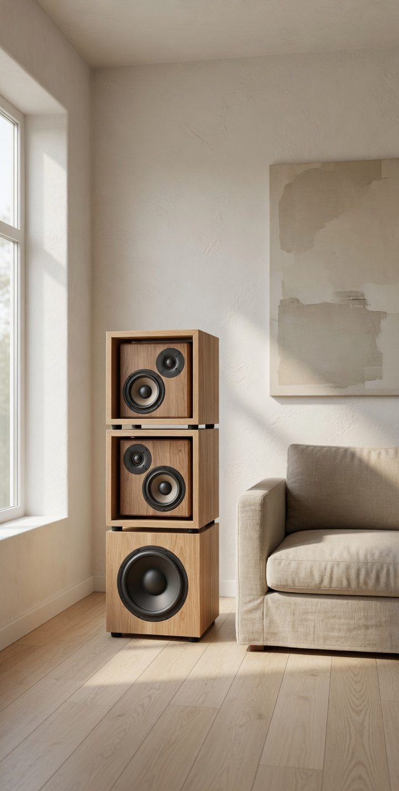

Fuerz4 · sistema 2.1
EPIC Sound System
Un sistema de sonido modular, capaz de adaptarse a tu espacio: en torre junto al sillón, o repartido en la habitación.
Ambientes
Un sistema, muchas opciones.
Imágenes de referencia, mejoradas con IA.
Sistema
Dos satélites y un woofer.
EPIC Sound System es un sistema de sonido 2.1 cableado. Cada satélite y el woofer se conectan al amplificador, el cual cuenta con entrada de línea (miniplug de 3,5 mm) o Bluetooth, controles de volumen, graves y agudos. Una combinación ideal para disfrutar de buena música.
-
01
Graves
Cubo sellado de 300 × 300 × 300 mm. Woofer Tonhalle W8150 de 8″, cono de celulosa reforzado con fibras y estructura de chapa reforzada.
-
02
Satélites
Dos cajones sellados de 240 × 240 × 140 mm. En cada frente, un medio Tonhalle RM5 de 5″ y un tweeter Tonhalle T13DR de domo de seda de 1″.
-
03
Electrónica
Entrada de línea (miniplug de 3,5 mm) y Bluetooth. Controles de volumen, graves y agudos. Salidas para 2 satélites y 1 woofer.
Especificaciones
Ficha del sistema.
EPIC Sound System es un sistema 2.1 cableado, en MDF enchapado en paraíso. El módulo de graves mide 30 cm de lado. Cada satélite, 24 × 24 × 14 cm. Línea y Bluetooth. 60 W RMS en total, para una habitación. Lo armamos por encargo, en 15 a 20 días. Se disfruta aún con la música apagada.
Gabinete
| Pieza | Medida | Material |
|---|---|---|
| Módulo de graves | 300 × 300 × 300 mm | MDF enchapado en paraíso, sellado |
| Cada satélite | 240 × 240 × 140 mm | MDF enchapado en paraíso, sellado |
| Nichos | 300 × 300 × 300 mm | Cubo hueco, mismo enchapado |
Alimentación y amplificación
| Entrada de red | 100–240 V AC, 50/60 Hz |
|---|---|
| Fuente interna | Conmutada, 24 V DC, 4 A |
| Amplificador | TPA3116D2. 30 W RMS por canal, 60 W RMS en total |
| Entradas | Línea (miniplug de 3,5 mm) y Bluetooth |
| Salidas | 2 satélites (medio de 5″ y domo de 1″) y 1 woofer (grave de 8″) |
| Controles | Agudos, graves y volumen |
Transductores Tonhalle
| Graves · W8150 | Medio · RM5 | Agudo · T13DR | |
|---|---|---|---|
| Tipo | Woofer de 8″ (204 mm) | Rango medio de 5″ (150 mm) | Domo de seda de 1″ |
| Impedancia | 8 Ω | 8 Ω | 8 Ω |
| Resistencia DC | 6,3 Ω | 5,8 Ω | 6 Ω ±10% |
| Sensibilidad | 90 dB, 1 W / 1 m | 90 dB, 1 W / 1 m | 97 dB continuos |
| Ancho de banda | 20 Hz – 5,7 kHz | 125 Hz – 7,2 kHz | 3,5 kHz – 22 kHz |
| Bobina | 38 mm (1 ½″) | 25 mm (1″) | 26 mm |
| Diafragma | Celulosa con fibras | — | Textil de seda |
Contacto
Escribinos.
¿En qué lugar de tu casa lo pondrías? Escribinos, nos interesa saber de vos.
Precio$500.000 por transferencia bancaria.